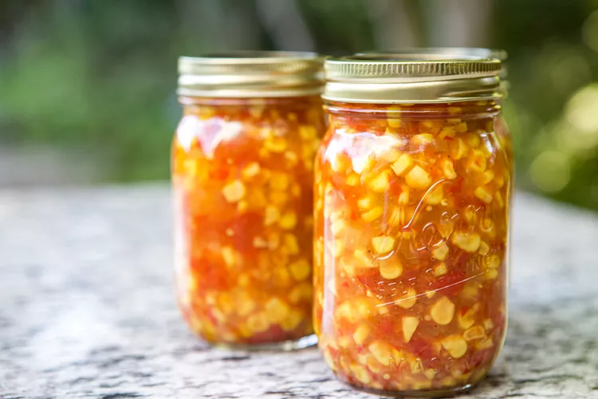

Corn Fresno Relish
Chef Lester Lepiten

Description
A nice relish to be enjoyed on a sandwich or as a standaline side
Ingredients
- Corn
- Fresno Chiles
- Champagne Vinegar
- Salt & Pepper
Steps
- Remove corn from cob and blitz in a food processor until a majority of the kernels are broken while still having a chunky texture
- Mince seeded Fresno Peppers
- Combine in a mixing bowl with Champagne Vinegar
- Salt & Pepper to taste
Home